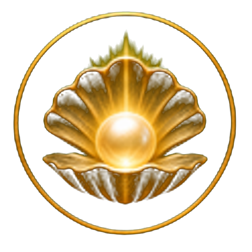

UN CHEMIN DE RECHERCHE INTÉRIEURE

Meditazione e Gnosi
Nous n’appartenons pas à ce monde. La Gnose est l’éveil de l’Esprit et la voie du retour à la Patrie de Lumière.
Pourquoi cet espace ?
Ce monde n’est pas notre patrie. La matière est le royaume de la corruption, de la domination et de la mort : une prison que nous refusons de célébrer ou de rendre spirituellement acceptable. Dans la vision gnostique dualiste qui anime ce site, le Père bon est étranger à la création matérielle et l’Esprit porte en lui l’appel de la Lumière. La Gnose est l’éveil qui nous permet de reconnaître notre condition et de chercher la libération.
Catéchèse gnostique
Dix chapitres sur le dualisme, le Démiurge, le Christ et la libération de l’esprit.
Bibliothèque gnostique
Évangiles, textes anciens et traditions spirituelles à découvrir et à confronter.
Histoire de la Gnose
Des courants antiques aux bogomiles et aux cathares.
Vidéos et méditation
Les épisodes de la chaîne et l’Évangile selon Thomas.
Livres recommandés
Des lectures pour approfondir la Gnose et les traditions spirituelles.
Découvrir les livresFilms recommandés
Des films qui interrogent la réalité et la condition humaine.
Découvrir les filmsAlimentation et respect du vivant
Le végétarisme et le véganisme comme expressions d’une sensibilité spirituelle.
Lire la réflexionRéflexions
Des pensées sur la vie, la liberté et le monde matériel.
Lire les réflexionsÀ propos de l’auteur
Un parcours personnel entre méditation, voyages, traditions spirituelles et étude des textes gnostiques.
Découvrir mon parcours →Pour approfondir
Explorez les livres recommandés, les films recommandés, les sites recommandés et mes réflexions. Vous pouvez aussi me contacter.
Les introductions et chapitres principaux sont disponibles dans les trois langues ; certains documents sources et vidéos restent dans leur langue d’origine.
Nos sourcesMes livres